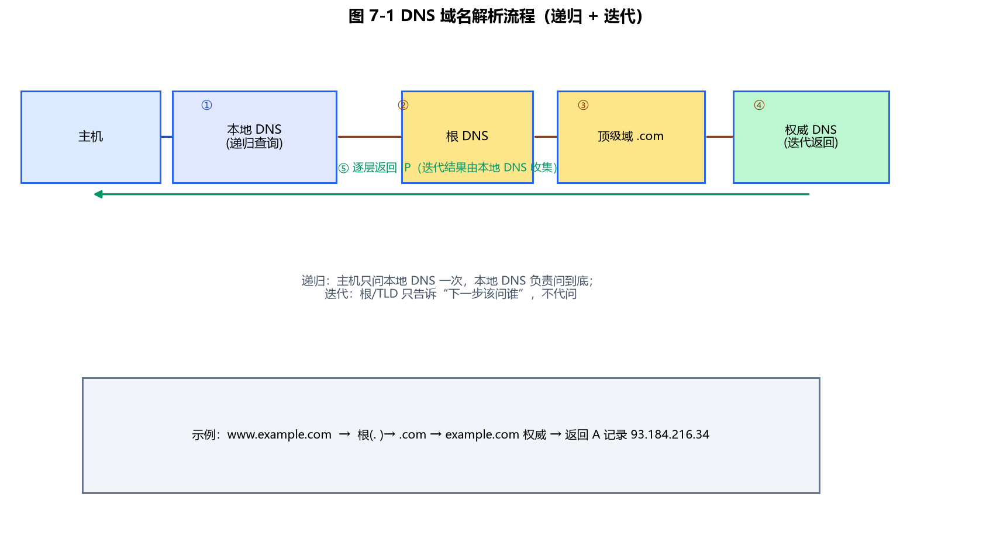
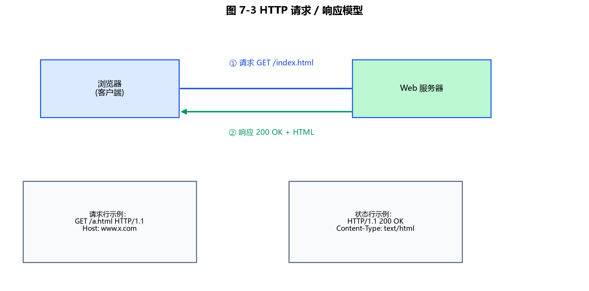
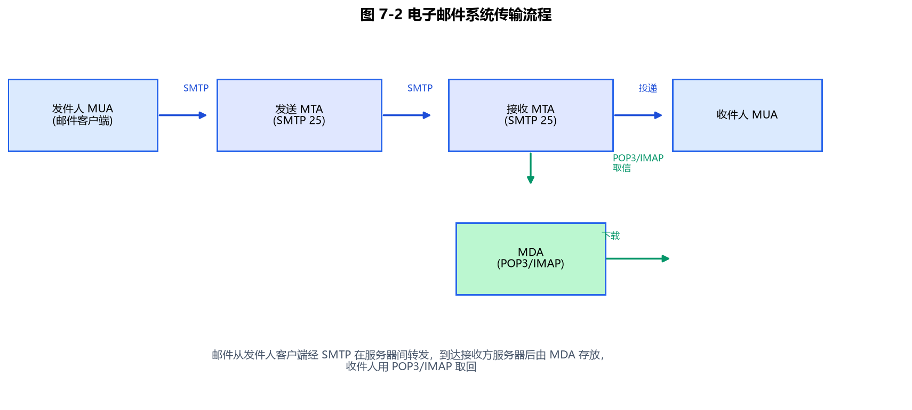

第7章 因特网
因特网（Internet）是 CSP 初赛的常考理论章节，概念多、易混淆（协议归属、域名结构、邮件协议栈）。复赛虽不直接考，但理解"域名↔IP""URL 结构""服务类型"有助于读懂题目背景。本章把每个可程序化的知识点都写成 C++17 示例，方便亲手验证。
7.1 Internet 概述与组成
Internet 是将城域网、广域网等连接起来的世界范围最大计算机网络（全球性信息资源网）。从实现技术看，它由四部分构成：
| 组成 | 作用 |
|---|---|
| 通信线路 | 连接路由器↔路由器、路由器↔主机（双绞线/同轴电缆/光纤/无线/卫星） |
| 路由器 | 把局域网、城域网、广域网、主机互连，按路由表转发 IP 包 |
| 主机 | 信息资源与服务的载体，分服务器与客户机 |
| 信息资源 | 文本、图像、语音、视频等多媒体 |
传输速率指线路每秒传输的比特数：信道带宽越宽，传输速率越高；高速率网络称为宽带网。
7.1.1 路由器转发（教学示例）
路由器核心是"路由表"：根据目标网络查下一跳。真实路由器用最长前缀匹配，下面用 map 精确匹配 + 默认路由示意：
#include <iostream>
#include <string>
#include <map>
using namespace std;
// 极简路由表：目标网络 -> 下一跳（真实情况用最长前缀匹配，这里示意查表）
string route(const map<string,string>& table, const string& dest, const string& def) {
auto it = table.find(dest);
return it != table.end() ? it->second : def;
}
int main() {
map<string,string> tbl = {
{"192.168.1.0", "eth0(直连)"},
{"10.0.0.0", "192.168.1.1(网关A)"},
{"172.16.0.0", "192.168.1.2(网关B)"}
};
cout << "到 10.0.0.5 经: " << route(tbl, "10.0.0.0", "丢弃") << "\n";
cout << "到 8.8.8.8 经: " << route(tbl, "8.8.8.8", "默认路由 0.0.0.0") << "\n";
return 0;
}
7.2 域名与 IP 地址、DNS
浏览器输入网址后，先从网址取出域名，再通过访问 DNS 获得对应 IP 地址。DNS（域名系统）是一张分布式数据库，记录"域名 ↔ IP 地址"的对应关系，由域名空间、域名服务器、地址转换请求程序组成。在因特网上：域名唯一、IP 地址也唯一。

图 7-1：DNS 解析——主机向本地 DNS 发起递归查询，本地 DNS 通过根、顶级域、权威服务器迭代查询，最终返回 IP。
7.2.1 DNS 解析模拟（教学示例）
真实 DNS 是分布式的（本地→根→顶级→权威逐级查询），下面用 map 示意"查表解析"：
#include <iostream>
#include <string>
#include <map>
using namespace std;
// 用 map 模拟 DNS：域名 -> IP（真实 DNS 还需递归/迭代查询，这里只示意查表）
string dnsLookup(const map<string,string>& dns, const string& domain) {
auto it = dns.find(domain);
return it != dns.end() ? it->second : "(解析失败)";
}
int main() {
map<string,string> dns = {
{"www.example.com", "93.184.216.34"},
{"www.baidu.com", "110.242.68.66"},
{"mail.example.com", "93.184.216.35"}
};
cout << "www.baidu.com -> " << dnsLookup(dns, "www.baidu.com") << "\n";
// 真实流程：本地 DNS 先查缓存/本机 hosts，未命中再向上级(根->顶级->权威)递归查询
return 0;
}
7.3 域名结构与顶级域名
域名格式为 ...三级域名.二级域名.顶级域名，字段间用 . 分隔，一般 3~5 个字段。顶级域名（TLD）分三类：
7.3.1 国家顶级域名
| 国家或地区 | 域名 | 国家或地区 | 域名 | |
|---|---|---|---|---|
| 中国 | cn | 香港 | hk | |
| 美国 | us | 澳门 | mo | |
| 英国 | uk | 台湾 | tw | |
| 日本 | jp | 新加坡 | sg |
7.3.2 国际顶级域名
int：国际组织可在 int 下注册。
7.3.3 通用顶级域名
| 域名 | 用途 | 域名 | 用途 | |
|---|---|---|---|---|
| com | 商业组织 | gov | 政府部门 | |
| edu | 教育机构 | net | 网络组织 | |
| org | 非营利组织 | mil | 军事部门 |
域名也是一种知识产权，越短越易记忆和推广。
7.3.4 域名分级解析（教学示例）
把域名按 . 拆成层级，并判断顶级域名类别：
#include <iostream>
#include <string>
#include <vector>
#include <sstream>
using namespace std;
// 按 '.' 拆分域名层级（从右到左：顶级/二级/三级...）
vector<string> splitLevels(const string& domain) {
vector<string> v; string tok;
stringstream ss(domain);
while (getline(ss, tok, '.')) v.push_back(tok);
return v;
}
// 判断顶级域名类别（国家/通用/国际）
string tldType(const string& tld) {
if (tld == "cn" || tld == "us" || tld == "uk" || tld == "jp" || tld == "hk" || tld == "tw")
return "国家顶级域名";
if (tld == "int") return "国际顶级域名";
if (tld == "com" || tld == "edu" || tld == "gov" || tld == "net" || tld == "org" || tld == "mil")
return "通用顶级域名";
return "其他";
}
int main() {
string d = "www.tsinghua.edu.cn";
vector<string> lv = splitLevels(d);
string tld = lv.back();
cout << d << " 共 " << lv.size() << " 级，顶级域=" << tld
<< "，类别=" << tldType(tld) << "\n"; // 国家顶级域名
return 0;
}
7.4 因特网提供的服务
| 服务 | 全称 | 说明 |
|---|---|---|
| WWW | World Wide Web（万维网） | 全球规模信息服务系统，网页用 HTML 编写，经 HTTP 传输 |
| FTP | File Transfer Protocol（文件传输协议） | 计算机间传文件，几乎支持所有类型文件 |
| Telnet | 远程登录协议 | 定义远程用户与服务器交互方式（明文，已被 SSH 取代） |
7.4.1 按协议头判断服务类型（教学示例）
#include <iostream>
#include <string>
using namespace std;
// 根据 URL 的协议头判断因特网服务类型
string serviceOf(const string& url) {
if (url.rfind("http://", 0) == 0 || url.rfind("https://", 0) == 0) return "WWW(万维网)";
if (url.rfind("ftp://", 0) == 0) return "FTP(文件传输)";
if (url.rfind("telnet://", 0) == 0) return "Telnet(远程登录)";
return "未知服务";
}
int main() {
cout << "http://www.baidu.com -> " << serviceOf("http://www.baidu.com") << "\n";
cout << "ftp://mirror/site/file -> " << serviceOf("ftp://mirror/site/file") << "\n";
cout << "telnet://host -> " << serviceOf("telnet://host") << "\n";
return 0;
}
7.5 URL 与 HTML/HTTP
WWW 网页用 HTML（超文本标记语言） 编写，在 HTTP（超文本传输协议） 下运行。超文本不仅含文本，还含声音、图像、视频等，又称超媒体；其中指向其他文档的链接称为超链。
URL（统一资源定位器） 是 Internet 上资源的唯一地址，格式为 协议名://IP地址或域名，例如 http://www.example.com。

图 7-3：HTTP 请求-响应模型——浏览器发送请求行与请求头，服务器返回状态行与响应体。
7.5.1 URL 解析与超链提取（教学示例）
#include <iostream>
#include <string>
using namespace std;
// 解析 URL：拆出 协议 / 主机 / 路径
void parseUrl(const string& url, string& proto, string& host, string& path) {
size_t p = url.find("://");
proto = url.substr(0, p);
string rest = url.substr(p + 3);
size_t s = rest.find('/');
if (s == string::npos) { host = rest; path = "/"; }
else { host = rest.substr(0, s); path = rest.substr(s); }
}
// 从一段 HTML 中提取第一个超链的 href（教学示意）
string firstHref(const string& html) {
size_t a = html.find("href=\"");
if (a == string::npos) return "(无超链)";
size_t b = html.find('"', a + 6);
return html.substr(a + 6, b - (a + 6));
}
int main() {
string u = "https://www.example.com/docs/index.html";
string proto, host, path;
parseUrl(u, proto, host, path);
cout << "协议=" << proto << " 主机=" << host << " 路径=" << path << "\n";
string html = "<a href=\"https://www.baidu.com\">百度</a>";
cout << "超链指向: " << firstHref(html) << "\n";
return 0;
}
7.6 电子邮件系统：SMTP / POP3 / MIME / IMAP
电子邮件地址格式：收件人邮箱名@邮箱所在主机的域名，例如 2677345028@qq.com。与即时通讯不同，邮箱可在空闲时查看再决定是否回复。
邮件传输原本要求收发双方全程开机联网；引入"邮件服务器"中转后，流程变为：发送方 → 发送端邮件服务器 → 接收端邮件服务器 → 接收方，接收方不必始终在线。

图 7-2：邮件传输——SMTP 负责把邮件从发件人送到收件人服务器，POP3/IMAP 负责收件人取信。
| 协议 | 全称 | 作用与特点 |
|---|---|---|
| SMTP | Simple Mail Transfer Protocol | 发信，基于 TCP 保证可靠；只能处理 7 位 ASCII 文本 |
| MIME | Multipurpose Internet Mail Extensions | 邮件扩展：发非 ASCII（音频/视频/中文等）前先转成 ASCII，再由 SMTP 发送 |
| POP3 | Post Office Protocol v3 | 收信；接收方不必随时开机/联网；但功能简单（需整封下载，不能只下某附件） |
| IMAP | Internet Mail Access Protocol | 收信，比 POP3 强：可指定下载附件、管理已读/未读、多端同步 |
7.6.1 邮箱地址校验（教学示例）
#include <iostream>
#include <string>
using namespace std;
// 教学版邮箱合法性校验：必须含一个 '@'，前后非空，且域名含 '.'
bool validEmail(const string& s) {
size_t at = s.find('@');
if (at == string::npos || at == 0 || at + 1 >= s.size()) return false;
string local = s.substr(0, at);
string domain = s.substr(at + 1);
return !local.empty() && !domain.empty() && domain.find('.') != string::npos;
}
// 拆分 用户名 @ 域名
void splitMail(const string& s, string& user, string& domain) {
size_t at = s.find('@');
user = s.substr(0, at);
domain = s.substr(at + 1);
}
int main() {
string m = "alice@example.com";
cout << m << " 合法? " << (validEmail(m) ? "是" : "否") << "\n";
string u, d; splitMail(m, u, d);
cout << "用户名=" << u << " 域名=" << d << "\n"; // alice / example.com
return 0;
}
7.7 本章小结
- Internet 由通信线路、路由器、主机、信息资源四部分构成；路由器按路由表转发 IP 包。
- DNS 把域名解析为 IP（分布式）；域名按
.分级，顶级域名分国家（cn/us/...）、国际（int）、通用（com/edu/gov/net/org/mil）三类。 - 服务类型：WWW（HTTP+HTML，含超链/超媒体）、FTP（文件传输）、Telnet（远程登录，已被 SSH 取代）。
- URL = 协议://主机/路径；是资源唯一地址。
- 邮件协议栈：SMTP 发信（基于 TCP，仅 ASCII）→ MIME 把非 ASCII 转 ASCII 再发送；POP3 收信（简单）、IMAP 收信（强，多端同步、可指定附件）。邮箱格式
用户名@主机域名。
随堂检测（CSP-S 风格）
-
（单选）下列协议中，负责把域名解析为 IP 地址的是（ ）
- A. HTTP
- B. DNS
- C. FTP
- D. SMTP
参考答案
B. DNS。
解析（考点）：DNS（域名系统）记录"域名↔IP 地址"对应关系；HTTP 是网页传输、FTP 是文件传输、SMTP 是发邮件，均与域名解析无关。
-
（单选）电子邮件地址 alice@example.com 中，example.com 表示（ ）
- A. 用户名
- B. 邮箱所在主机的域名
- C. 协议名
- D. 国家代码
参考答案
B. 邮箱所在主机的域名。
解析（考点）：邮箱格式为"收件人邮箱名@邮箱所在主机的域名"，
@之前是用户名（alice），之后是域名（example.com）。 -
（单选）顶级域名 .edu 属于（ ）
- A. 国家顶级域名
- B. 国际顶级域名
- C. 通用顶级域名（教育机构）
- D. 保留域名
参考答案
C. 通用顶级域名（教育机构）。
解析（考点）：通用顶级域名中 com=商业、edu=教育、gov=政府、net=网络、org=非营利、mil=军事；国家顶级域名如 cn/us/jp，国际顶级域名是 int。
-
（多选）下列关于电子邮件协议的说法，正确的有（ ）
- A. SMTP 用于发送邮件，且基于 TCP
- B. POP3 收信要求接收方一直开机联网
- C. MIME 把非 ASCII 内容转为 ASCII 以便经 SMTP 传输
- D. IMAP 比 POP3 功能更丰富，可指定下载附件、多端同步
参考答案
A、C、D。
解析（考点）：POP3 的优点正是接收方不必随时开机联网（B 错）；SMTP 发信用 TCP 保证可靠（A 对）；MIME 把音频/视频/中文等非 ASCII 转成 ASCII 再由 SMTP 发送（C 对）；IMAP 支持指定附件、已读管理和多端同步（D 对）。
-
（单选）URL https://www.baidu.com/index.html 中，https 表示（ ）
- A. 主机名
- B. 协议名
- C. 路径
- D. 端口号
参考答案
B. 协议名。
解析（考点）：URL 格式为"协议://主机/路径"，https 是加密的 HTTP 协议名；www.baidu.com 是主机，/index.html 是路径。
-
（单选）关于 Telnet，下列说法正确的是（ ）
- A. 用于文件传输
- B. 是远程登录协议
- C. 基于 UDP
- D. 现代浏览器默认启用
参考答案
B. 是远程登录协议。
解析（考点）：Telnet 是远程登录协议（明文，已被 SSH 取代）；文件传输是 FTP（A 错）；远程登录基于 TCP（C 错）；因明文不安全，现代已不默认启用（D 错）。